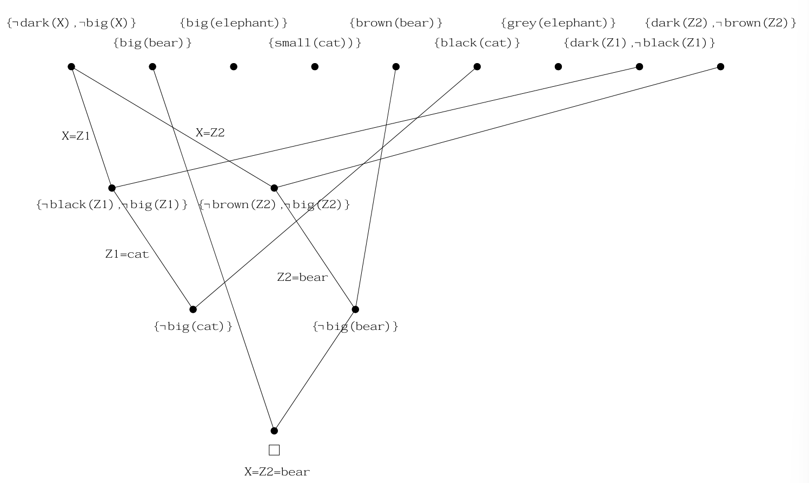
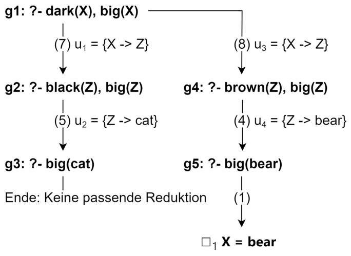

Prolog ist keine Sprache, in der du dem Computer jeden einzelnen Schritt wie in Java, C oder Python vorschreibst. Du beschreibst stattdessen Fakten und Regeln. Danach stellst du Fragen, und Prolog versucht durch logisches Schließen passende Antworten zu finden.
Deklarative Programmierung sagt nicht zuerst: „Mache Schritt 1, dann Schritt 2, dann Schritt 3.“ Sie beschreibt vielmehr, welche Tatsachen gelten sollen, welche Beziehungen zwischen Dingen bestehen und welche Bedingungen erfüllt sein müssen. Der Programmierer legt also eine Art Wissensbasis an; die Laufzeit sucht dann selbst nach Lösungen, die zu dieser Wissensbasis passen. Das ist ein anderer Schwerpunkt als in imperativen Sprachen: Nicht der Ablauf ist zentral, sondern die logische Struktur des Problems.
Der Begriff relational ist damit eng verwandt, aber nicht identisch. Relational bedeutet vor allem: Es geht um Beziehungen zwischen Objekten, etwa „X ist Mutter von Y“ oder „A steht in Verbindung mit B“. Deklarativ ist der größere Rahmen: Es umfasst nicht nur Beziehungen, sondern auch Regeln, Einschränkungen, logische Ableitungen und Suchprozesse. Prolog ist deshalb sowohl deklarativ als auch relational: Es arbeitet mit einer deklarativen Wissensbasis, in der Informationen vor allem als Relationen oder Regeln formuliert werden.
Mini-Anleitung: Prolog-Logik als Kern einer UI oder Datenbankanwendung
Eine kleine Idee für echte Anwendungen ist diese:
- Die Logik bleibt in Prolog oder in Regeln einer Datenbank.
- Die UI sammelt Eingaben und zeigt Ergebnisse an.
- Die Datenbank speichert Fakten, Nutzerinformationen oder Referenzdaten.
So entsteht ein klarer Aufbau: Eingabe → Abfrage/Regelprüfung → Ergebnis → Darstellung. Das ist oft angenehmer als alles in einer einzigen Konsole oder einem einzigen Skript zu mischen.
Du sagst: „Mache zuerst A, dann B, dann C.“
Du sagst: „Diese Beziehungen gelten. Finde heraus, was daraus folgt.“
Programm = Wissensbasis. Ausführung = Anfrage an diese Wissensbasis.
1. Die Grundidee
In der imperativen Programmierung verändert ein Programm Schritt für Schritt den Speicherzustand. In der logischen Programmierung steht dagegen eine Wissensbasis im Mittelpunkt. Sie enthält Aussagen über die Welt und Regeln, mit denen neue Aussagen abgeleitet werden können.
Relational
Statt Befehlen werden Beziehungen beschrieben: mutter(diana, william).
Deklarativ
Du gibst Regeln an und lässt Prolog daraus Folgen ableiten.
Prädikatenlogisch
Die Wissensbasis besteht aus Fakten, Regeln und Anfragen – nicht aus Ablaufanweisungen.
| Begriff | Für Dummies erklärt | Prolog-Beispiel |
|---|---|---|
| Fakt | Eine Aussage, die als wahr gilt. | mutter(diana, william). |
| Regel | Eine Aussage, die gilt, wenn andere Aussagen gelten. | elternteil(X, Y) :- mutter(X, Y). |
| Anfrage | Eine Frage an die Wissensbasis. | ?- elternteil(diana, william). |
| Variable | Ein Platzhalter, den Prolog passend belegen darf. | ?- mutter(X, william). |
Merksatz: Prolog rechnet nicht zuerst, sondern sucht zuerst nach einer Belegung von Variablen, die die Anfrage wahr macht.
1. Prädikatenlogik
Man formuliert Aussagen über Objekte und ihre Beziehungen.
2. Klausellogik
Diese Aussagen werden als Klauseln geschrieben, also als Regeln mit mehreren Bedingungen.
3. Hornklauseln in Prolog
Für Prolog sind vor allem Regeln mit höchstens einem positiven Kopf wichtig.
Klauseln und Hornklauseln in einfachen Worten
Eine Klausel ist eine Oder-Verknüpfung von Literalen. Für Prolog sind besonders Hornklauseln wichtig. Eine Hornklausel ist eingeschränkter: Sie hat höchstens ein positives Literal. Genau dadurch kann man sie gut als Regel lesen: Wenn alle Bedingungen im Rumpf gelten, dann gilt der Kopf.
% Logische Lesart:
% elternteil(X, Y) gilt, wenn mutter(X, Y) gilt.
elternteil(X, Y) :-
mutter(X, Y).Sinnbild: Prolog ist eher Detektiv als Kochrezept
Eine imperative Sprache ist wie ein Kochrezept: Schritt 1 schneiden, Schritt 2 braten, Schritt 3 würzen. Prolog ist eher wie ein Detektiv mit Karteikarten: Es gibt Hinweise, Beziehungen und Regeln. Wenn du fragst „Wer ist verwandt?“, durchsucht Prolog die Karteikarten und kombiniert Hinweise, bis eine passende Erklärung gefunden ist.
2. Prolog ausprobieren: Web-UI oder lokal
Für die ersten Beispiele brauchst du nicht sofort eine lokale Installation. Du kannst Prolog entweder direkt im Browser ausprobieren oder SWI-Prolog auf deinem Rechner installieren und mit eigenen .pl-Dateien arbeiten.
Schnellster Einstieg. Keine Installation, gut für kleine Tests, Unterricht und geteilte Beispiele.
Besser für größere Projekte, Dateien, Python-Integration, Debugging und eigene Wissensbasen.
Code in .pl-Datei schreiben, laden, Anfragen stellen, Regeln schrittweise erweitern.
Variante A: Web-UI SWISH
SWISH ist die webbasierte SWI-Prolog-Umgebung. Du öffnest swish.swi-prolog.org, schreibst links Fakten und Regeln hinein und stellst unten oder rechts Anfragen.
% In SWISH in den Programmbereich kopieren:
mutter(diana, william).
mutter(diana, harry).
kind(Kind, Mutter) :-
mutter(Mutter, Kind).% Als Query ausführen:
?- kind(X, diana).
% Ergebnis:
X = william ;
X = harry.SWISH ist ideal, wenn du ein Konzept schnell testen willst: Fakten ändern, Query ausführen, weitere Lösung mit Semikolon anfordern. Für I/O-Beispiele mit echter Konsoleneingabe ist lokal installiertes SWI-Prolog meistens angenehmer.
Variante B: SWI-Prolog lokal installieren
Lokal arbeitest du mit dem Programm swipl. Die offizielle Download-Seite ist swi-prolog.org/download/stable.
| System | Typischer Weg | Prüfen |
|---|---|---|
| Windows | Installer von der SWI-Prolog-Downloadseite nutzen. | swipl --version |
| macOS | Installer von SWI-Prolog oder Paketmanager wie Homebrew. | swipl --version |
| Linux | Paketmanager der Distribution oder offizieller Download. | swipl --version |
Lokaler Mini-Workflow
Lege eine Datei stammbaum.pl an:
mutter(diana, william).
mutter(diana, harry).
kind(Kind, Mutter) :-
mutter(Mutter, Kind).Dann im Terminal im gleichen Ordner:
swipl
?- [stammbaum].
true.
?- kind(X, diana).
X = william ;
X = harry.Alternativ kannst du die Datei direkt beim Start laden:
swipl stammbaum.plNützliche lokale Kommandos
| Kommando | Bedeutung |
|---|---|
?- [dateiname]. | Datei dateiname.pl laden. |
?- consult('datei.pl'). | Datei explizit laden. |
?- make. | Geänderte Dateien neu laden. |
?- listing. | Geladene Fakten und Regeln anzeigen. |
?- halt. | SWI-Prolog verlassen. |
?- trace. | Tracer einschalten, um die Suche zu beobachten. |
Empfehlung: Nutze SWISH für erste Experimente und kurze Übungen. Nutze lokales SWI-Prolog, sobald du mehrere Dateien, Python-Anbindung, dynamische Fakten oder echte Projektstruktur brauchst.
3. Imperative Selektion vs. Prolog-Regeln
In imperativen Sprachen bedeutet Selektion meistens: if, else if, else. Der Programmfluss entscheidet aktiv, welcher Block ausgeführt wird. In Prolog formulierst du keine Verzweigung als Ablaufplan, sondern mehrere Fälle als Regeln. Prolog probiert dann, welche Regel zur Anfrage passt.
| Imperative Sprache | Prolog |
|---|---|
| Programm läuft von oben nach unten. | Anfrage wird gegen Fakten und Regeln bewiesen. |
if entscheidet einen Kontrollfluss. | Regeln beschreiben Fälle, die wahr sein können. |
| Variable bekommt meist einen neuen Wert. | Variable wird durch Unifikation passend gebunden. |
| Eine Funktion liefert normalerweise genau einen Rückgabewert. | Eine Anfrage kann null, eine oder viele Lösungen haben. |
Beispiel: Alterskategorie in JavaScript
function kategorie(alter) {
if (alter < 13) {
return "kind";
}
if (alter < 18) {
return "jugendlich";
}
return "erwachsen";
}Hier wird ein Pfad gewählt. Sobald eine Bedingung zutrifft, wird ein Wert zurückgegeben.
Dasselbe Denken in Prolog
kategorie(Alter, kind) :-
Alter < 13.
kategorie(Alter, jugendlich) :-
Alter >= 13,
Alter < 18.
kategorie(Alter, erwachsen) :-
Alter >= 18.?- kategorie(15, Kategorie).
Kategorie = jugendlich.Das sieht ähnlich aus, bedeutet aber etwas anderes: Die Regeln sagen nicht „springe in diesen Block“, sondern „diese Beziehung zwischen Alter und Kategorie gilt, wenn die Bedingungen erfüllt sind“.
Beispiel mit mehreren Lösungen
farbe(apfel, rot).
farbe(banane, gelb).
farbe(kirsche, rot).
rot(X) :-
farbe(X, rot).?- rot(Was).
Was = apfel ;
Was = kirsche.Sinnbild: Ein imperatives if ist wie eine Weiche auf einer Schiene. Prolog-Regeln sind wie mehrere passende Karteikarten. Eine Anfrage kann eine Karteikarte finden, mehrere finden oder keine finden.
4. Deine spezielle Selektion: Direktionalität
In deiner Zusammenfassung taucht ein sehr wichtiger Gedanke auf: Bei Prolog ist nicht nur der Wert eines Arguments wichtig, sondern auch, ob ein Argument schon instanziiert ist. Ein Prädikat kann also je nach „Richtung“ der Anfrage anders arbeiten.
Es ist schon gebunden, zum Beispiel summe(3, 4, X).
Es ist noch frei und soll durch Prolog gefunden werden, zum Beispiel summe(3, X, 7).
Mit var, nonvar, number, is_list usw. kann man Fälle trennen.
Fall A: A und B sind Eingaben
add(2, 3, X).Fall B: Ergebnis ist schon bekannt
add(2, X, 5).Fall C: Erster Wert wird gesucht
add(X, 3, 5).Das ist eine Art Selektion, aber nicht wie ein normales if/else. Es ist eher eine Auswahl passender Prädikat-Fälle anhand des Zustands der Argumente.
Beispiel: ein Additionsprädikat mit mehreren Richtungen
add(A, B, C) :-
number(A),
number(B),
var(C),
C is A + B.
add(A, B, C) :-
number(A),
var(B),
number(C),
B is C - A.
add(A, B, C) :-
var(A),
number(B),
number(C),
A is C - B.?- add(2, 3, X).
X = 5.
?- add(2, X, 5).
X = 3.
?- add(X, 3, 5).
X = 2.Warum ist das speziell?
In JavaScript oder Java würdest du meistens eine Funktion mit fester Richtung schreiben: zwei Eingaben rein, ein Ergebnis raus. In Prolog kannst du ein Prädikat so bauen, dass es je nach Anfrage vorwärts oder rückwärts arbeitet. Dafür muss es aber wissen, welche Argumente schon belegt sind.
| Prädikat | Bedeutung | Typische Nutzung |
|---|---|---|
var(X) | X ist noch ungebunden. | Ausgabeplatz erkennen |
nonvar(X) | X ist schon gebunden. | Eingabeplatz erkennen |
number(X) | X ist eine Zahl. | arithmetische Richtung absichern |
integer(X) | X ist eine ganze Zahl. | Zähler, Indizes, Rekursion |
atom(X) | X ist ein Atom. | Namen, Symbole, Labels |
is_list(X) | X ist eine echte Liste. | Listenfälle absichern |
Wichtig: Diese Art von Selektion ist mächtig, aber auch gefährlich. Wenn die Argumente nicht so belegt sind, wie deine Regel es erwartet, scheitert sie oder läuft in eine falsche Richtung.
Direktionalität als Modusdenken
In vielen Prolog-Dokumentationen wird Direktionalität über Modi beschrieben. Ein Modus sagt, ob ein Argument vor dem Aufruf schon belegt sein soll, ob es Ergebnis sein soll oder ob beides möglich ist.
| Modus | Lesart | Beispiel |
|---|---|---|
+ | muss Eingabe sein, also schon gebunden | number(+X) |
- | wird Ausgabe, also typischerweise freie Variable | read(-Term) |
? | kann Eingabe oder Ausgabe sein | length(?List, ?Length) |
: | ein Ziel, das ausgeführt werden kann | call(:Goal) |
Ein besonders gutes Beispiel ist length/2. Es kann in mehrere Richtungen genutzt werden:
?- length([a, b, c], N).
N = 3.
?- length(L, 3).
L = [_A, _B, _C].
?- length(L, N).
L = [],
N = 0 ;
L = [_A],
N = 1 ;
L = [_A, _B],
N = 2.Das zeigt den Kern der Direktionalität: Ein Prädikat ist nicht automatisch eine Funktion mit festem Rückgabewert. Es ist eine Relation, die je nach Belegung der Argumente suchen, prüfen oder erzeugen kann.
5. Das erste Prolog-Programm
Ein Prolog-Programm besteht aus Fakten und Regeln. Jede Aussage endet mit einem Punkt. Namen von Atomen beginnen klein, Variablen beginnen groß oder mit einem Unterstrich.
Fakten
big(bear).
black(bear).
Regel
dark(Z) :- black(Z).Anfrage
?- dark(X), big(X).big(bear) und Regeln wie dark(Z) :- black(Z) bilden eine kleine Wissensbasis. Eine Anfrage wie dark(X), big(X) sucht dann ein Objekt, das beide Bedingungen erfüllt.% familie.pl
mutter(diana, william).
mutter(diana, harry).
vater(charles, william).
vater(charles, harry).
elternteil(X, Y) :- mutter(X, Y).
elternteil(X, Y) :- vater(X, Y).
geschwister(X, Y) :-
elternteil(Z, X),
elternteil(Z, Y),
X \== Y.Anfragen
?- mutter(diana, william).
true.
?- mutter(X, william).
X = diana.
?- elternteil(charles, Kind).
Kind = william ;
Kind = harry.Das Semikolon in vielen Prolog-Umgebungen bedeutet: „Gib mir die nächste Lösung.“ Prolog sucht dann per Backtracking nach weiteren passenden Belegungen.
Syntaxregeln, die fast immer Fehler verhindern
atombeginnt klein:diana,book,rot.Variablebeginnt groß:X,Kind,Result._ist eine anonyme Variable: Der Wert ist egal und wird nicht wiederverwendet.- Jede Regel und jeder Fakt endet mit einem Punkt.
:-liest man als „wenn“:Kopf :- Bedingung.
6. Unifikation: Das Herz von Prolog
In Prolog bedeutet = nicht einfach „Zuweisung“ wie in vielen imperativen Sprachen. Es bedeutet: Können beide Seiten durch passende Variablenbelegung gleich gemacht werden?
Arithmetik und Vergleich
Unifikation (=) und arithmetische Auswertung (is) sind unterschiedliche Dinge. Das ist der Kern der meisten Anfängerfehler.
Datenobjekte
- Konstanten wie
prologoder42 - Variablen wie
XoderResult - Strukturen wie
book(1, 'Titel')
| Operator | Bedeutung | Beispiel |
|---|---|---|
= | unifizierbar | X = 5 bindet X an 5 |
\= | nicht unifizierbar | 5 \= 6 ist wahr |
== | strukturell identisch, ohne neue Bindung | a == a ist wahr |
\== | nicht identisch | X \== Y kann wahr sein, wenn beide ungebunden sind |
is | arithmetisch auswerten | X is 3 * 7 |
=:= | numerisch gleich | 2 + 3 =:= 5 |
=\= | numerisch ungleich | 4 =\= 5 |
?- X = 5.
X = 5.
?- X is 3 * 7.
X = 21.
?- 2 + 3 =:= 5.
true.
?- 2 + 3 = 5.
false.Wichtig: is wertet die rechte Seite aus. Deshalb funktioniert X is 3 * 7, aber 3 * 7 is X ist für Anfänger fast immer falsch gedacht.
7. Regeln, Aufbau und Anfragenauswertung
Eine Regel hat einen Kopf und einen Rumpf. Der Kopf ist das Ziel, das bewiesen werden soll. Der Rumpf enthält Teilziele, die Prolog der Reihe nach erfüllen muss.
Das, was durch die Regel behauptet wird: grosses_dunkles_tier(Tier).
Die Bedingungen nach :-. Sie müssen alle bewiesen werden.
Logisches UND: erst dieses Teilziel, dann das nächste.
grosses_dunkles_tier(Tier) :-
tier(Tier),
gross(Tier),
dunkel(Tier).Die Reihenfolge im Regelrumpf ist nicht nur Dekoration. Prolog versucht die Teilziele von links nach rechts. Dadurch kann eine Regel logisch richtig, aber praktisch ineffizient sein, wenn die Reihenfolge ungünstig ist.
Wie Prolog eine Anfrage abarbeitet
grosses_dunkles_tier(X).Tier = X.Dieses Zurückgehen nennt man Backtracking. Sinnbildlich: Prolog läuft durch ein Labyrinth. Wenn ein Weg nicht funktioniert, geht es zum letzten Abzweig zurück und probiert den nächsten Weg.


Strukturen
Strukturen bestehen aus einem Funktor und Argumenten. Sie eignen sich, um zusammengesetzte Daten zu modellieren.
Sinnbild: Eine Struktur ist wie eine beschriftete Kiste. Der Funktor ist das Etikett auf der Kiste, die Argumente sind die Fächer darin. author('Flavius', 'Josephus') ist also eine Kiste mit dem Etikett author und zwei Fächern.
book(0, 'de bello judaico', author('Flavius', 'Josephus')).
book(1, 'historica arcana', author('Flavius', 'Josephus')).
book(2, 'Epicteti dissertationes', author('Flavius', 'Arrianus')).
?- book(Id, Title, author('Flavius', Name)).
Id = 0,
Title = 'de bello judaico',
Name = 'Josephus' ;
Id = 1,
Title = 'historica arcana',
Name = 'Josephus' ;
Id = 2,
Title = 'Epicteti dissertationes',
Name = 'Arrianus'.Typ- und Instanzprüfungen
?- var(X).
true.
?- nonvar(42).
true.
?- number(3.14).
true.
?- integer(3.14).
false.
?- atom(prolog).
true.
?- is_list([a, b, c]).
true.8. Rekursion statt Schleifen
In Prolog gibt es nicht dieselbe Schleifenlogik wie in imperativen Sprachen. Wiederholung entsteht meist durch Rekursion: Ein Prädikat ruft sich selbst auf, bis eine Abbruchbedingung erreicht ist.
Sinnbild: Rekursion ist ein Stapel offener Aufgaben
Stell dir vor, du willst eine Treppe hochgehen. Bei normaler Rekursion sagst du auf jeder Stufe: „Ich merke mir diese Stufe, gehe weiter und rechne später zurück.“ Bei Endrekursion nimmst du dagegen einen Notizzettel mit: „Bisheriges Ergebnis = ...“ und aktualisierst ihn auf jeder Stufe. Am Ende musst du nicht mehr zurückrechnen, weil das Ergebnis schon auf dem Zettel steht.
Rekursiver Abstieg
fibonacci(N, F) :-
N > 1,
N1 is N - 1,
N2 is N - 2,
fibonacci(N1, F1),
fibonacci(N2, F2),
F is F1 + F2.Basisfall
fibonacci(0, 0).
fibonacci(1, 1).Merksatz
- Jeder Schritt verkleinert das Problem.
- Der Basisfall beendet die Rekursion.
- Das Ergebnis baut sich beim Zurückkommen auf.
Der typische Aufbau
| Baustein | Aufgabe | Beispiel |
|---|---|---|
| Startprädikat | Schöne öffentliche Schnittstelle für die Anfrage. | summe(Liste, Summe) |
| Abbruchbedingung | Sagt, wann die Rekursion fertig ist. | summe_acc([], Acc, Acc). |
| Rekursiver Fall | Zerlegt das Problem und ruft sich kleiner wieder auf. | summe_acc([H|T], Acc, Summe) |
| Akkumulator | Trägt das Zwischenergebnis durch die Rekursion. | NextAcc is Acc + H |
Wertverlaufsrekursion: direkt, aber speicherintensiver
Bei der Wertverlaufsrekursion entsteht das Ergebnis erst, nachdem rekursive Aufrufe fertig sind. Prolog muss sich also merken, was nach dem Rückweg noch zu tun ist.
fibonacci(0, 0).
fibonacci(1, 1).
fibonacci(N, F) :-
N > 1,
N1 is N - 1,
N2 is N - 2,
fibonacci(N1, F1),
fibonacci(N2, F2),
F is F1 + F2.Endrekursion: etwas mehr Code, aber speicherschonender
Bei der Endrekursion steht der rekursive Aufruf ganz am Ende der Regel. Danach kommt keine weitere Rechnung mehr. Das Zwischenergebnis wird vorher in einen Akkumulator gepackt.
fibonacci_fast(N, F) :-
fibonacci_acc(N, 0, 1, F).
fibonacci_acc(0, A, _, A).
fibonacci_acc(N, A, B, F) :-
N > 0,
N1 is N - 1,
Sum is A + B,
fibonacci_acc(N1, B, Sum, F).?- fibonacci_fast(8, F).
F = 21.Endrekursion Schritt für Schritt
fibonacci_fast(4, F)
fibonacci_acc(4, 0, 1, F)
fibonacci_acc(3, 1, 1, F)
fibonacci_acc(2, 1, 2, F)
fibonacci_acc(1, 2, 3, F)
fibonacci_acc(0, 3, 5, F)
F = 3Die letzten beiden Zahlen im Akkumulator sind immer die beiden aktuellen Fibonacci-Werte. Bei jedem Schritt wandert das Fenster weiter. Dadurch muss Prolog nicht mehrere offene Additionen aufheben.
| Variante | Idee | Für Anfänger |
|---|---|---|
| Wertverlaufsrekursion | Ergebnis entsteht nach den rekursiven Aufrufen. | Leicht zu lesen, aber schnell teuer. |
| Endrekursion | Zwischenergebnis wird als Akkumulator weitergereicht. | Etwas ungewohnter, aber effizienter. |
Merksatz zur Endrekursion: Wenn der rekursive Aufruf das Letzte ist, was eine Regel tut, und alle Zwischenergebnisse schon als Argumente mitgegeben werden, ist die Regel endrekursiv.
9. Listen verstehen
Listen sind in Prolog rekursiv aufgebaut. Die Schreibweise [Head | Tail] zerlegt eine Liste in erstes Element und Restliste.
Sinnbild: Eine Liste ist eine Kette
[a, b, c] ist nicht einfach ein Block, sondern eher eine Kette aus erstem Glied und Restkette. Head ist das erste Glied, Tail ist alles, was danach noch kommt. Deshalb passen Listen so gut zu Rekursion: Man bearbeitet vorne ein Element und gibt den Rest wieder an dieselbe Regel weiter.
?- [Head | Tail] = [a, b, c].
Head = a,
Tail = [b, c].Interne Vorstellung: Paar aus Kopf und Rest
Die Zusammenfassung beschreibt Listen als verkettete Paare, deren letztes Element die leere Liste ist. Sinnbildlich ist [1,2,3] also nicht „ein Arrayblock“, sondern eher:
[1, 2, 3]
% entspricht gedanklich:
.(1, .(2, .(3, [])))Deshalb ist der Zugriff auf das erste Element billig, aber der Zugriff auf spätere Elemente braucht Traversierung. Eine Liste wird von vorne nach hinten durchlaufen.
Länge einer Liste
Leere Liste
list_length([], 0).Rekursiver Fall
list_length([_ | Tail], Length) :-
list_length(Tail, TailLength),
Length is TailLength + 1.Muster
- Basisfall für
[] - Rekursion mit
[Head | Tail] - Zwischenergebnis wird weitergereicht
[Head | Tail] und arbeitet rekursiv weiter.list_length([], 0).
list_length([_ | Tail], Length) :-
list_length(Tail, TailLength),
Length is TailLength + 1.Member: Ist ein Element enthalten?
Auch hier lohnt sich eine kurze Vorüberlegung zur Direktionalität.
% Ziel: member_of(+Element, +Liste)
% oder alternativ: member_of(?Element, +Liste)
%
% Direktionalität:
% - mit festem Element und Liste kann man prüfen, ob es enthalten ist
% - mit einer freien Variable als erstem Argument kann man alle Elemente erzeugen
member_of(X, [X | _]).
member_of(X, [_ | Tail]) :-
member_of(X, Tail).member_of/2 ist ein gutes Beispiel für mehrere Richtungen. Man kann fragen, ob ein konkretes Element enthalten ist, oder sich alle Elemente nacheinander ausgeben lassen.
?- member_of(b, [a, b, c]).
true.
?- member_of(X, [a, b, c]).
X = a ;
X = b ;
X = c.Insert: Element an beliebiger Stelle einfügen
Die folgende Version zeigt, wie man ein Prädikat mit klarer Vorüberlegung schreibt.
% Ziel: insert_anywhere(+Element, +Liste, -Ergebnis)
%
% Direktionalität:
% - Element und Liste sind Eingabe
% - Ergebnis ist Ausgabe
% - Die Rekursion baut schrittweise neue Listen auf
insert_anywhere(X, List, [X | List]).
insert_anywhere(X, [Head | Tail], [Head | Result]) :-
insert_anywhere(X, Tail, Result).?- insert_anywhere(x, [a, b], Result).
Result = [x, a, b] ;
Result = [a, x, b] ;
Result = [a, b, x].Append: Zwei Listen verbinden
Auch hier ist es hilfreich, zuerst zu klären, welche Argumente Eingabe und welche Ergebnis sind.
% Ziel: append_list(+Liste1, +Liste2, -Ergebnis)
%
% Direktionalität:
% - Liste1 und Liste2 sind Eingaben
% - Ergebnis ist Ausgabe
% - Die Rekursion arbeitet sich durch Liste1 hindurch
append_list([], List, List).
append_list([Head | Tail], List, [Head | Result]) :-
append_list(Tail, List, Result).Delete: Element entfernen
Ein weiteres typisches Beispiel für eine kleine Prädikat-Analyse vor dem Schreiben.
% Ziel: delete_one(+Element, +Liste, -Ergebnis)
%
% Direktionalität:
% - Element und Liste sind Eingabe
% - Ergebnis ist Ausgabe
% - die erste passende Stelle wird entfernt
delete_one(X, [X | Tail], Tail).
delete_one(X, [Head | Tail], [Head | Result]) :-
delete_one(X, Tail, Result).Reverse: Liste umdrehen
Die folgende Version ersetzt die Abbildung aus der Zusammenfassung durch direkt kopierbaren Code. Die Kommentare übernehmen die Denkweise aus dem Bild: erst Direktionalität klären, dann das eigentliche endrekursive Hilfsprädikat mit Akkumulator aufbauen.
% VORÜBERLEGUNG:
% Ziel: my_reverse(+List, -Reversed)
%
% Direktionalität 1:
% arg1 = Liste, die umgedreht werden soll
% arg2 = freie Variable für das Ergebnis
%
% Idee:
% Wir laufen von links nach rechts durch arg1.
% Dabei legen wir jedes gelesene Element vorne auf einen Akkumulator.
% Am Ende enthält der Akkumulator die Liste bereits umgedreht.
%
% Beispiel:
% [1,2,3], Acc=[]
% [2,3], Acc=[1]
% [3], Acc=[2,1]
% [], Acc=[3,2,1]
my_reverse(List, Reversed) :-
my_reverse_iter(List, [], Reversed).
% Fall 1: Eingabeliste ist leer.
% Dann ist der Akkumulator bereits das fertige Ergebnis.
my_reverse_iter([], Accumulator, Accumulator).
% Fall 2: Eingabeliste hat Head und Tail.
% Head wird vorne auf den Akkumulator gelegt.
% Danach geht es mit Tail weiter.
my_reverse_iter([Head | Tail], Accumulator, Reversed) :-
NextAccumulator = [Head | Accumulator],
my_reverse_iter(Tail, NextAccumulator, Reversed).?- my_reverse([1, 2, 3], R).
R = [3, 2, 1].
?- my_reverse([a, b, c, d], R).
R = [d, c, b, a].Warum Akkumulator? Ohne Akkumulator müsste man beim Zurücklaufen der Rekursion immer wieder hinten anhängen. Das ist bei Listen teuer. Mit Akkumulator wird jedes Element einmal vorne angefügt; das ist das typische endrekursive Muster.
Flatten: verschachtelte Listen abflachen
flatten nimmt eine Liste, in der wieder Listen liegen können, und macht daraus eine flache Liste. Das ist rekursiv etwas anspruchsvoller, weil man zwischen drei Fällen unterscheiden muss: leere Liste, Kopf ist selbst Liste, Kopf ist normales Element.
flatten_list([], []).
flatten_list([Head | Tail], Flat) :-
is_list(Head),
flatten_list(Head, FlatHead),
flatten_list(Tail, FlatTail),
append_list(FlatHead, FlatTail, Flat).
flatten_list([Head | Tail], [Head | FlatTail]) :-
\+ is_list(Head),
flatten_list(Tail, FlatTail).?- flatten_list([a, [b, c], [[d]], e], X).
X = [a, b, c, d, e].Listen, Laufzeit und Speicher
| Operation | Typische Kosten | Warum? |
|---|---|---|
| Kopf lesen | O(1) | [Head | _] passt direkt auf das erste Paar. |
| Element suchen | O(n) | Prolog läuft die Liste von vorne nach hinten ab. |
| Am Anfang einfügen | O(1) | [X | List] baut nur ein neues Paar davor. |
| Hinten anhängen | O(n) | Das Ende muss erst gefunden werden. |
| Naives Reverse | oft teuer | Wiederholtes Anhängen kann unnötige Traversierung erzeugen. |
| Reverse mit Akkumulator | O(n) | Jedes Element wird einmal nach vorne in den Akkumulator gelegt. |
Ausprobieren
?- list_length([a, b, c], L).
L = 3.
?- member_of(b, [a, b, c]).
true.
?- append_list([1, 2], [3, 4], X).
X = [1, 2, 3, 4].
?- delete_one(b, [a, b, c], X).
X = [a, c].
?- my_reverse([1, 2, 3], X).
X = [3, 2, 1].Listen-Merksatz: Fast alle Listenprogramme bestehen aus zwei Fällen: leere Liste als Abbruchbedingung und [Head | Tail] als rekursiver Fall.
10. Advanced: IO, Calls, Bäume und Speicher
Wenn Fakten, Regeln, Rekursion und Listen sitzen, kommen die typischen Praxisfragen: Wie liest man Eingaben? Wie schreibt man Ausgaben? Wie wartet man kurz? Wie ruft man Ziele dynamisch auf? Wie modelliert man Bäume? Und was passiert im Speicher?
Eingabe und Ausgabe
Prolog ist eigentlich für logisches Schließen gebaut, kann aber natürlich auch mit der Konsole sprechen. Für Lernprogramme reichen oft write/1, writeln/1, read/1 und nl/0.
Und ja: Genau wie man aus Prolog eine CLI-Anwendung machen kann, kann man darüber auch eine UI legen. In der Praxis bedeutet das oft: Die eigentliche Logik bleibt in Prolog oder in einer Datenbank als Regel- und Faktenbasis erhalten, während eine Web- oder Desktop-Oberfläche nur Eingaben sammelt und Ergebnisse darstellt. Man spricht dann eher von einer „Frontend-Schicht“ über einer logischen Kernschicht. Ein klassisches Beispiel wäre eine kleine Such- oder Entscheidungsanwendung: Die UI fragt nach Daten, die Logik sucht passende Lösungen, und die UI zeigt sie verständlich an.
Wenn man zusätzlich ein DBMS einsetzt, ist das oft derselbe Gedanke auf höherer Ebene: Die Daten liegen strukturiert in einer Datenbank, die Anwendung stellt Abfragen, und die Logik entscheidet, welche Ergebnisse angezeigt oder weiterverarbeitet werden. Prolog ist dann nicht unbedingt die gesamte Anwendung, sondern eher ein Teil der Denk- und Regelmaschine darunter.
frage_name :-
write('Wie heißt du? '),
read(Name),
write('Hallo, '),
write(Name),
write('!'),
nl.?- frage_name.
Wie heißt du? felix.
Hallo, felix!
true.read/1 liest einen Prolog-Term. Deshalb muss die Eingabe mit einem Punkt enden. Wer normale Textstrings lesen will, nutzt in SWI-Prolog eher read_line_to_string/2.
:- use_module(library(readutil)).
frage_text :-
write('Name: '),
read_line_to_string(user_input, Name),
format('Hallo, ~w!~n', [Name]).Warten und kleine Konsolenprogramme
Für kurze Pausen kann man in SWI-Prolog sleep/1 verwenden. Das ist praktisch für Demos, Animationen oder schrittweise Ausgaben.
countdown(0) :-
writeln('Start!').
countdown(N) :-
N > 0,
writeln(N),
sleep(1),
N1 is N - 1,
countdown(N1).?- countdown(3).
3
2
1
Start!
true.Call, Fail und Cut
call/1 führt ein Ziel aus, das als Term vorliegt. Das ist advanced, weil man damit Prädikate wie Daten behandeln kann.
sicher_ausfuehren(Ziel) :-
write('Starte: '),
writeln(Ziel),
call(Ziel),
writeln('Erfolgreich.').?- sicher_ausfuehren(member(X, [a, b])).
Starte: member(_G, [a,b])
X = a ;
X = b.fail erzwingt Scheitern. Das wirkt zunächst seltsam, ist aber nützlich, wenn man durch Backtracking absichtlich alle Lösungen erzeugen will.
drucke_alle_farben :-
farbe(Ding, Farbe),
format('~w ist ~w~n', [Ding, Farbe]),
fail.
drucke_alle_farben.! heißt Cut. Ein Cut sagt: „Ab hier nicht mehr zurückgehen und keine alternativen Regeln davor probieren.“ Das kann Programme schneller und eindeutiger machen, aber auch logische Eleganz zerstören.
note(Punkte, sehr_gut) :-
Punkte >= 90,
!.
note(Punkte, bestanden) :-
Punkte >= 50,
!.
note(_, nicht_bestanden).Cut-Regel: Nutze ! erst, wenn du erklären kannst, welche Alternativen abgeschnitten werden. Für Anfänger ist ein expliziter zusätzlicher Vergleich oft verständlicher.
Bäume als Prolog-Strukturen
Bäume passen sehr gut zu Prolog, weil ein Baum rekursiv aufgebaut ist. Ein leerer Baum ist ein Basisfall, ein Knoten enthält Wert, linken Teilbaum und rechten Teilbaum.
% empty oder node(Wert, Links, Rechts)
baum(
node(5,
node(3, empty, empty),
node(8, empty, empty)
)
).Suche im binären Suchbaum
tree_member(X, node(X, _, _)).
tree_member(X, node(Value, Left, _)) :-
X < Value,
tree_member(X, Left).
tree_member(X, node(Value, _, Right)) :-
X > Value,
tree_member(X, Right).?- baum(T), tree_member(3, T).
true.
?- baum(T), tree_member(7, T).
false.Tiefensuche über beliebige Bäume
dfs(X, node(X, _, _)).
dfs(X, node(_, Left, _)) :-
dfs(X, Left).
dfs(X, node(_, _, Right)) :-
dfs(X, Right).Das ist dieselbe Denkweise wie bei Listen: Ein Baum hat einen Basisfall und rekursive Teilstrukturen. Nur gibt es hier nicht einen Tail, sondern mehrere Teilbäume.
Speicher: Was Prolog sich merken muss
Prolog braucht Speicher nicht nur für Daten, sondern auch für die Suche. Besonders wichtig sind Zielstapel, Variablenbindungen und Choice Points.
| Speicheridee | Bedeutung | Warum wichtig? |
|---|---|---|
| Zielstapel | Welche Teilziele sind noch offen? | Normale Rekursion legt viele offene Aufgaben ab. |
| Variablenbindungen | Welche Variable wurde woran gebunden? | Unifikation muss nachvollziehbar bleiben. |
| Choice Points | Wo gibt es alternative Lösungen? | Backtracking springt zu diesen Punkten zurück. |
| Trail | Welche Bindungen müssen rückgängig gemacht werden? | Beim Zurückgehen muss Prolog alte Zustände wiederherstellen. |
| Akkumulator | Zwischenergebnis als Argument. | Endrekursion reduziert offene Nacharbeit. |
Speicher-Merksatz: Normale Rekursion spart Schreibarbeit, kann aber viele offene Aufgaben erzeugen. Endrekursion verschiebt Arbeit in Akkumulatoren und ist deshalb oft speicherschonender.
11. Prädikate: SWI-Prolog und eigene Beispiele
SWI-Prolog enthält sehr viele eingebaute Prädikate und zusätzlich Bibliotheken wie library(lists). Die folgende Übersicht ist deshalb kein Ersatz für die komplette offizielle Predicate-Summary, sondern ein praktischer Lern-Spickzettel für die Prädikate, die man in Anfänger- und Aufbauaufgaben ständig braucht.
Für die vollständige Suche nutzt du in SWI-Prolog selbst apropos/1 oder die offizielle Übersicht: SWI-Prolog Predicate Summary.
Von dir bzw. in diesem Guide manuell definierte Prädikate
| Prädikat | Rolle | Direktionalität |
|---|---|---|
mutter/2, vater/2 | Familienfakten | mutter(?Mutter, ?Kind) |
elternteil/2 | Regel aus Mutter/Vater | prüfen oder passende Eltern/Kinder suchen |
geschwister/2 | gemeinsames Elternteil finden | mehrere Lösungen durch Backtracking |
kategorie/2 | imperative Selektion als Prolog-Fälle | kategorie(+Alter, -Kategorie) |
add/3 | deine Direktionalitäts-Selektion | add(+,+,-), add(+,-,+), add(-,+,+) |
fibonacci/2 | Wertverlaufsrekursion | fibonacci(+N, -F) |
fibonacci_fast/2, fibonacci_acc/4 | Endrekursion mit Akkumulator | öffentlicher Einstieg plus internes Hilfsprädikat |
list_length/2 | Listenlänge selbst implementiert | hier primär list_length(+List, -Length) |
member_of/2 | Element in Liste suchen | member_of(?Element, +List) |
insert_anywhere/3 | Element an mehreren Positionen einsetzen | erzeugt per Backtracking mehrere Ergebnislisten |
append_list/3 | Listen verbinden | Relation zwischen Prefix, Suffix und Gesamtlist |
delete_one/3 | ein Vorkommen entfernen | delete_one(?X, +List, -Result) |
my_reverse/2, my_reverse_iter/3 | Liste mit Akkumulator umdrehen | endrekursives Muster mit kommentiertem Aufbau |
flatten_list/2 | verschachtelte Listen abflachen | nutzt is_list/1 als Selektionsprüfung |
frage_name/0, frage_text/0 | Konsolen-Eingabe/Ausgabe | Seiteneffekt statt reine Relation |
countdown/1 | Warten mit sleep/1 | countdown(+N) |
sicher_ausfuehren/1 | Meta-Call mit call/1 | sicher_ausfuehren(:Goal) |
tree_member/2, dfs/2 | Baumsuche | rekursive Strukturprädikate |
sum_list/2, sum_acc/3 | Summieren mit Akkumulator | klassische Endrekursion |
Typprüfung und Instanziierung
| Prädikat | Bedeutung | Typischer Einsatz |
|---|---|---|
var/1 | Argument ist freie Variable | Ausgaberichtung erkennen |
nonvar/1 | Argument ist bereits gebunden | Eingaberichtung erkennen |
atom/1 | Term ist Atom | Symbolnamen prüfen |
atomic/1 | Term ist atomar | Atom, Zahl, String usw. |
number/1 | Term ist Zahl | vor is/2 oder Vergleichen prüfen |
integer/1 | Term ist Ganzzahl | Zähler und Indizes |
float/1 | Term ist Gleitkommazahl | numerische Spezialfälle |
string/1 | Term ist SWI-Prolog-String | Textverarbeitung |
compound/1 | Term ist zusammengesetzt | Strukturen wie node(...) |
callable/1 | Term kann als Ziel aufgerufen werden | vor call/1 |
is_list/1 | Term ist echte Liste | Listenfälle absichern |
Unifikation, Vergleich und Arithmetik
| Prädikat/Operator | Bedeutung | Beispielidee |
|---|---|---|
=/2 | Unifikation | X = 5 |
\=/2 | nicht unifizierbar | a \= b |
==/2, \==/2 | identisch / nicht identisch ohne Bindung | Strukturvergleich |
@</2, @=</2, @>/2, @>=/2 | Standardordnung von Termen | sortierbare Termordnung |
compare/3 | Termvergleich mit Ergebnis <, =, > | Vergleichsergebnis weiterverarbeiten |
is/2 | arithmetischen Ausdruck auswerten | X is 2+3 |
=:=/2, =\=/2 | numerisch gleich / ungleich | 2+3 =:= 5 |
</2, =</2, >/2, >=/2 | numerische Vergleiche | Grenzen, Selektion, Rekursion |
between/3 | Ganzzahlen in Bereich erzeugen oder prüfen | between(1, 5, X) |
succ/2 | Nachfolgerbeziehung natürlicher Zahlen | rekursive Zähler |
Kontrollprädikate und Backtracking
| Prädikat | Bedeutung | Warnung |
|---|---|---|
true/0 | gelingt immer | neutraler Erfolgsfall |
fail/0, false/0 | scheitert immer | Backtracking erzwingen |
!/0 | Cut, schneidet Alternativen ab | vorsichtig verwenden |
,/2 | UND | Teilziele von links nach rechts |
;/2 | ODER | Alternativen |
->/2 | If-Then | nicht rein logisch |
*->/2 | Soft-Cut | SWI-spezifischer Advanced-Fall |
\+/1 | Negation als Scheitern | heißt nicht klassische logische Negation |
once/1 | nur erste Lösung nehmen | entspricht oft Goal + Cut |
repeat/0 | unendliche Choice Points erzeugen | nur mit Abbruchbedingung verwenden |
Listen und Sammlungen
| Prädikat | Bedeutung | Hinweis |
|---|---|---|
length/2 | Listenlänge oder Liste mit Länge erzeugen | sehr gutes Direktionalitätsbeispiel |
member/2 | Element ist in Liste | kann Elemente generieren |
memberchk/2 | deterministischer Member-Test | nur erste passende Lösung |
append/3 | Listen verknüpfen oder zerlegen | Relation zwischen Prefix, Suffix, Gesamtlist |
select/3 | Element aus Liste auswählen/entfernen | ähnlich deinem delete_one/3 |
delete/3 | alle passenden Elemente entfernen | aus library(lists) |
reverse/2 | Liste umdrehen | SWI-Version ist optimiert |
permutation/2 | Permutation erzeugen/prüfen | kann schnell teuer werden |
sort/2 | sortieren und Duplikate entfernen | Standard-Termordnung |
msort/2 | sortieren mit Duplikaten | Multi-Set-ähnlich |
keysort/2 | Paare nach Schlüssel sortieren | Key-Value-Listen |
maplist/2..5 | Prädikat auf Listen anwenden | höherwertiges Listenmuster |
include/3, exclude/3 | filtern | mit Prädikat als Bedingung |
partition/4 | Liste nach Bedingung teilen | wahr/falsch-Listen |
flatten/2 | verschachtelte Liste abflachen | praktisch, aber nicht immer bestes Datenmodell |
nth0/3, nth1/3 | Element per Index | 0- bzw. 1-basiert |
last/2 | letztes Element | muss bis Listenende laufen |
Alle Lösungen sammeln
| Prädikat | Bedeutung | Unterschied |
|---|---|---|
findall/3 | alle Lösungen als Liste sammeln | liefert bei keiner Lösung [] |
bagof/3 | Lösungen gruppiert nach freien Variablen sammeln | scheitert bei keiner Lösung |
setof/3 | wie bagof/3, aber sortiert und ohne Duplikate | gut für eindeutige Ergebnismengen |
Ein-/Ausgabe, Dateien und Text
| Prädikat | Bedeutung | Typischer Einsatz |
|---|---|---|
write/1, writeln/1 | Term ausgeben | einfache Konsolenausgabe |
format/2, format/3 | formatierte Ausgabe | ~w, ~n |
nl/0 | neue Zeile | nach write/1 |
read/1 | Prolog-Term lesen | Eingabe endet mit Punkt |
read_line_to_string/2 | Zeile als String lesen | library(readutil) |
open/3, close/1 | Datei öffnen/schließen | Streams |
setup_call_cleanup/3 | Ressource sicher öffnen/nutzen/schließen | besser als manuelles Cleanup |
read_file_to_string/3 | Datei komplett lesen | library(readutil) |
sleep/1 | warten | Demos, kleine Animationen |
Dynamische Wissensbasis und Programme laden
| Prädikat/Direktive | Bedeutung | Hinweis |
|---|---|---|
consult/1, ['file.pl'] | Datei laden | klassischer Einstieg |
use_module/1 | Modul/Bibliothek laden | z. B. library(lists) |
listing/0, listing/1 | geladene Klauseln anzeigen | Debug/Orientierung |
dynamic/1 | Prädikat zur Laufzeit veränderbar machen | Direktive: :- dynamic fact/1. |
assertz/1, asserta/1 | Klausel hinten/vorne hinzufügen | verändert Wissensbasis |
retract/1 | eine passende Klausel entfernen | backtracking-fähig |
retractall/1 | alle passenden Klauseln entfernen | Reset-Muster |
abolish/1 | Prädikat vollständig entfernen | vorsichtig verwenden |
Meta-Calls, Debugging und Hilfe
| Prädikat | Bedeutung | Typischer Einsatz |
|---|---|---|
call/1..8 | Ziel dynamisch aufrufen | Meta-Programmierung |
ignore/1 | Ziel versuchen, Fehler/Scheitern ignorieren | Cleanup und optionale Aktionen |
notrace/1 | Ziel ohne Tracer ausführen | Debug-Ausnahmen |
trace/0, notrace/0 | Tracer an/aus | Anfragenauswertung beobachten |
spy/1, nospy/1 | Breakpoint setzen/entfernen | Prädikat gezielt debuggen |
gtrace/0 | grafischen Tracer starten | SWI-Prolog GUI |
help/1 | Dokumentation anzeigen | help(member/2) |
apropos/1 | Prädikate nach Stichwort suchen | apropos(list) |
Standardprädikate direkt ausprobieren
?- apropos(list).
% zeigt passende Prädikate und Dokumentationseinträge
?- help(length/2).
% öffnet die Dokumentation zu length/2
?- use_module(library(lists)).
true.Merksatz: Die wichtigste Frage bei jedem Standardprädikat ist nicht nur „Was macht es?“, sondern auch „In welchen Richtungen kann ich es benutzen?“ Genau dort hängt Prolog stark von Direktionalität ab.
12. Mini-Übungen
Diese Aufgaben passen gut zum direkten Ausprobieren in SWI-Prolog oder SWISH.
- Ergänze weitere Familienfakten und frage alle Kinder einer Person ab.
- Schreibe
grosselternteil(X, Y)mit einer ZwischenvariableZ. - Teste den Unterschied zwischen
=,==undis. - Schreibe
last_element(List, X)für das letzte Element einer Liste. - Baue
sum_list(List, Sum)einmal normal rekursiv und einmal mit Akkumulator.
Musterlösung: Großelternteil
grosselternteil(X, Y) :-
elternteil(X, Z),
elternteil(Z, Y).Musterlösung: Summe mit Akkumulator
sum_list(List, Sum) :-
sum_acc(List, 0, Sum).
sum_acc([], Acc, Acc).
sum_acc([Head | Tail], Acc, Sum) :-
NextAcc is Acc + Head,
sum_acc(Tail, NextAcc, Sum).13. Erste Prolog-Projekte zum Kopieren
Die folgenden Mini-Projekte sind bewusst klein. Sie funktionieren als erste eigene Dateien, lassen sich erweitern und zeigen typische Prolog-Stärken: Beziehungen modellieren, Regeln ableiten, mehrere Lösungen suchen und Prolog als kleine Wissensdatenbank nutzen.
Projektidee 1: Stammbaum
Das ist das klassische erste Prolog-Projekt, weil Familienbeziehungen fast direkt als Fakten und Regeln formuliert werden können.
% stammbaum.pl
person(elizabeth).
person(charles).
person(diana).
person(william).
person(harry).
person(george).
person(charlotte).
person(louis).
frau(elizabeth).
frau(diana).
frau(charlotte).
mann(charles).
mann(william).
mann(harry).
mann(george).
mann(louis).
mutter(diana, william).
mutter(diana, harry).
vater(charles, william).
vater(charles, harry).
vater(william, george).
vater(william, charlotte).
vater(william, louis).
elternteil(X, Y) :-
mutter(X, Y).
elternteil(X, Y) :-
vater(X, Y).
kind(Kind, Elternteil) :-
elternteil(Elternteil, Kind).
grosselternteil(X, Y) :-
elternteil(X, Z),
elternteil(Z, Y).
geschwister(X, Y) :-
elternteil(Z, X),
elternteil(Z, Y),
X \== Y.
vorfahr(X, Y) :-
elternteil(X, Y).
vorfahr(X, Y) :-
elternteil(X, Z),
vorfahr(Z, Y).?- grosselternteil(charles, Wer).
Wer = george ;
Wer = charlotte ;
Wer = louis.
?- geschwister(william, Wer).
Wer = harry.
?- vorfahr(charles, Wer).
Wer = william ;
Wer = harry ;
Wer = george ;
Wer = charlotte ;
Wer = louis.Erweiterungsideen: Ehepartner, Cousins/Cousinen, Onkel/Tante, Generationentiefe, Ausgabe als Stammbaum-Kante für Graphviz.
Projektidee 2: Mini-Expertensystem
Ein Expertensystem ist eine Regelbasis, die aus beobachteten Fakten eine Diagnose oder Empfehlung ableitet.
% expertensystem.pl
symptom(pc_startet_nicht, kein_bild).
symptom(pc_startet_nicht, kein_luefter).
symptom(internet_problem, kein_wlan).
symptom(internet_problem, router_blinkt_rot).
symptom(drucker_problem, papierstau).
symptom(drucker_problem, druckauftrag_haengt).
empfehlung(pc_startet_nicht, 'Netzteil und Stromkabel pruefen.').
empfehlung(internet_problem, 'Router neu starten und Verbindung pruefen.').
empfehlung(drucker_problem, 'Papierstau entfernen und Warteschlange leeren.').
diagnose(Problem, Empfehlung) :-
symptom(Problem, Symptom),
beobachtet(Symptom),
empfehlung(Problem, Empfehlung).
% Beispielwissen fuer eine Sitzung:
beobachtet(kein_wlan).
beobachtet(router_blinkt_rot).?- diagnose(Problem, Empfehlung).
Problem = internet_problem,
Empfehlung = 'Router neu starten und Verbindung pruefen.' ;
Problem = internet_problem,
Empfehlung = 'Router neu starten und Verbindung pruefen.'.Erweiterungsideen: Doppelte Diagnosen mit setof/3 entfernen, Gewichtungen einbauen, Fragen interaktiv stellen.
Projektidee 3: Kurs- oder Modul-Datenbank
Prolog eignet sich gut als kleine Wissensdatenbank für Kurse, Voraussetzungen und Empfehlungen.
% studium.pl
modul(algo_dat, 5, sommer).
modul(theoretische_informatik, 5, winter).
modul(datenbanken, 5, sommer).
modul(ki, 5, winter).
voraussetzung(ki, algo_dat).
voraussetzung(datenbanken, algo_dat).
interesse(felix, logik).
interesse(felix, daten).
thema(theoretische_informatik, logik).
thema(datenbanken, daten).
thema(ki, logik).
kann_belegen(Person, Modul) :-
modul(Modul, _, _),
\+ voraussetzung(Modul, _).
kann_belegen(Person, Modul) :-
voraussetzung(Modul, Voraussetzung),
bestanden(Person, Voraussetzung).
empfohlen(Person, Modul) :-
interesse(Person, Thema),
thema(Modul, Thema),
kann_belegen(Person, Modul).
bestanden(felix, algo_dat).?- empfohlen(felix, Modul).
Modul = theoretische_informatik ;
Modul = ki ;
Modul = datenbanken.Erweiterungsideen: ECTS-Summe, Semesterplanung, Konflikte, Pflicht-/Wahlpflichtmodule, Ausgabe als Wochenplan.
Projektidee 4: Kleine Routen- und Graphsuche
Graphen sind Beziehungen. Genau dafür ist Prolog stark.
% routen.pl
kante(jena, weimar).
kante(weimar, erfurt).
kante(erfurt, gotha).
kante(jena, naumburg).
kante(naumburg, halle).
verbunden(X, Y) :-
kante(X, Y).
verbunden(X, Y) :-
kante(Y, X).
route(Start, Ziel, Route) :-
route(Start, Ziel, [Start], Route).
route(Ziel, Ziel, Besucht, Route) :-
reverse(Besucht, Route).
route(Aktuell, Ziel, Besucht, Route) :-
verbunden(Aktuell, Naechster),
\+ member(Naechster, Besucht),
route(Naechster, Ziel, [Naechster | Besucht], Route).?- route(jena, erfurt, Route).
Route = [jena, weimar, erfurt].Erweiterungsideen: Kantengewichte, kürzeste Route, verbotene Knoten, Visualisierung.
Projektidee 5: Regelbasierter Quiz-Checker
Hier kann Prolog prüfen, ob Antworten korrekt sind, und Folgefragen auswählen.
% quiz.pl
frage(q1, 'Was ist ein Fakt in Prolog?').
antwort(q1, korrekt, 'Eine Aussage, die als wahr gilt.').
antwort(q1, falsch, 'Eine Schleife.').
frage(q2, 'Was macht Unifikation?').
antwort(q2, korrekt, 'Sie macht Terme durch Variablenbindung gleich.').
antwort(q2, falsch, 'Sie sortiert Listen.').
richtig(Frage, Text) :-
antwort(Frage, korrekt, Text).
feedback(Frage, Text, 'Richtig!') :-
richtig(Frage, Text).
feedback(Frage, Text, 'Leider falsch.') :-
antwort(Frage, falsch, Text).?- feedback(q2, 'Sie macht Terme durch Variablenbindung gleich.', F).
F = 'Richtig!'.14. Prolog als Datenbank in Python nutzen
Du kannst Prolog gut als regelbasierte Datenbank verwenden: Fakten und Regeln liegen in einer .pl-Datei, Python stellt Anfragen und nutzt die Antworten. Das ist sinnvoll, wenn die Logik sehr relational ist, zum Beispiel Stammbäume, Expertensysteme, Regelprüfungen, Stundenplanbedingungen oder Wissensgraphen.
Variante A: PySwip
PySwip ist ein Python-Interface zu SWI-Prolog. Es lädt eine Prolog-Datei und liefert Query-Ergebnisse als Python-Dictionaries.
pip install pyswipDatei stammbaum.pl:
mutter(diana, william).
mutter(diana, harry).
vater(charles, william).
vater(charles, harry).
elternteil(X, Y) :-
mutter(X, Y).
elternteil(X, Y) :-
vater(X, Y).
kind(Kind, Elternteil) :-
elternteil(Elternteil, Kind).Datei main.py:
from pathlib import Path
from pyswip import Prolog
base_dir = Path(__file__).parent
prolog = Prolog()
prolog.consult(str(base_dir / "stammbaum.pl"))
print("Kinder von Diana:")
for result in prolog.query("kind(Kind, diana)"):
print("-", result["Kind"])
print("Eltern von William:")
for result in prolog.query("elternteil(Elternteil, william)"):
print("-", result["Elternteil"])Typische Ausgabe:
Kinder von Diana:
- william
- harry
Eltern von William:
- diana
- charlesKonkretes Beispiel: Python-UI mit Prolog als Hintergrundlogik
Hier ist ein sehr einfaches Muster: Python stellt eine kleine GUI oder Web-UI bereit, aber die eigentliche Entscheidungslogik läuft in Prolog.
Datei familie.pl:
mutter(diana, william).
mutter(diana, harry).
vater(charles, william).
vater(charles, harry).
elternteil(X, Y) :-
mutter(X, Y).
elternteil(X, Y) :-
vater(X, Y).
kind(Kind, Elternteil) :-
elternteil(Elternteil, Kind).Datei ui.py:
from pyswip import Prolog
prolog = Prolog()
prolog.consult("familie.pl")
name = input("Gib einen Namen ein: ")
results = list(prolog.query(f"kind(Kind, {name})"))
if results:
print("Gefundene Kinder:")
for item in results:
print("-", item["Kind"])
else:
print("Keine Ergebnisse gefunden.")Das Muster ist einfach und gut verständlich:
- Python übernimmt die Eingabe und Ausgabe.
- Prolog liefert die passenden Lösungen über Regeln.
- Die UI muss sich nicht um die logische Suche kümmern.
Wenn du das später zu einer echten App ausbaust, kannst du die gleiche Struktur auf eine Web-UI übertragen: Flask oder FastAPI nimmt die Anfrage, Prolog liefert die Antwort, und das Frontend zeigt das Ergebnis an.
Prolog dynamisch aus Python füttern
Wenn Python Fakten zur Laufzeit einfügen soll, brauchst du in Prolog ein dynamisches Prädikat.
% facts.pl
:- dynamic produkt/2.
teuer(Name) :-
produkt(Name, Preis),
Preis > 100.from pyswip import Prolog
prolog = Prolog()
prolog.consult("facts.pl")
prolog.assertz("produkt(laptop, 899)")
prolog.assertz("produkt(maus, 25)")
for result in prolog.query("teuer(Name)"):
print(result["Name"])
prolog.retractall("produkt(_, _)")Variante B: Janus/SWI-Prolog
SWI-Prolog dokumentiert mit Janus eine bidirektionale Schnittstelle zwischen Python und Prolog. Janus ist interessant, wenn du enger mit SWI-Prolog arbeiten willst oder auch Python aus Prolog heraus nutzen möchtest.
pip install janus-swiimport janus_swi as janus
janus.consult("stammbaum.pl")
for result in janus.query("kind(Kind, diana)"):
print(result["Kind"])Architekturidee: Python bleibt die App-Schicht für UI, API, Dateien, Datenbankzugriff oder Machine Learning. Prolog bleibt die Regel- und Wissensschicht. Python fragt: „Welche Regeln treffen zu?“ Prolog antwortet mit passenden Bindungen.
Wann Prolog als Datenbank sinnvoll ist
| Sinnvoll | Eher nicht sinnvoll |
|---|---|
| Viele Regeln und Beziehungen | reine CRUD-Datenhaltung |
| mehrere mögliche Lösungen | sehr große Massendaten ohne logische Regeln |
| Erklärbare Ableitungen | hoher Schreibdurchsatz wie bei Eventlogs |
| Expertensysteme, Stammbäume, Planer | klassische Tabellenreports ohne Inferenz |
Weiterführender Guide: Wenn du Scheme separat kennenlernen willst, findest du einen eigenen Einstieg in scheme-guide.html.
Kurzfazit
Prolog fühlt sich am Anfang ungewohnt an, weil man nicht in Befehlsfolgen, sondern in Beziehungen denkt. Die wichtigsten Bausteine sind Fakten, Regeln, Anfragen, Unifikation und Rekursion. Sobald diese Begriffe sitzen, werden auch Listen, Backtracking und komplexere Regeln deutlich verständlicher.
Für Anfänger lohnt sich ein kleines Vorgehen: erst Fakten schreiben, dann einfache Anfragen testen, danach Regeln ergänzen und zuletzt Rekursion für wiederholte Strukturen verwenden.